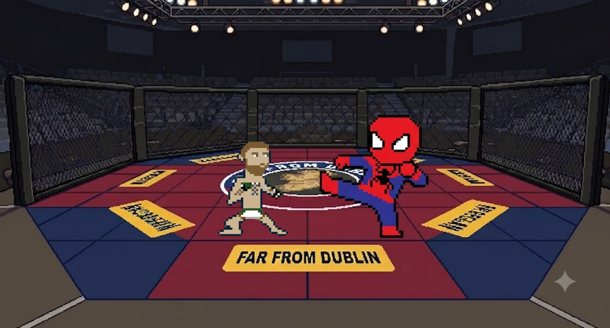

Level 1 is the first challenge.Spuder-Man has to face Conor Mc Gregor in an underground cage. Learn the controls and use the attack features to advance to the next level and save Ireland from chaos.
Play as Spuder-Man and attack Conor Mc Gregor to advance to Level 2.Collect the collectables on the way such as ther chicken fillet roll and spuds which will replenish the health bar.